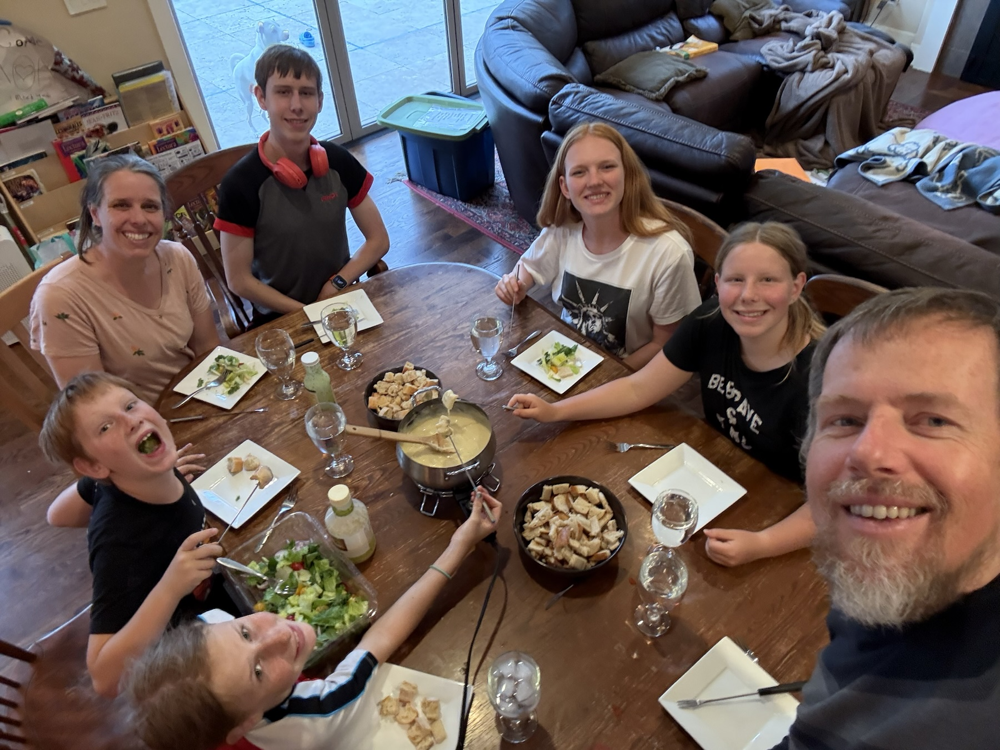

Psalm 1
Psalm 1,1–6
Indie-Pop · 1:20

Psalm 8
Psalm 8,2–10
Rock · 2:13

Psalm 13
Psalm 13,2–6
Alternative Rock · 1:46

Über diese Lieder
Die Texte sind die Bibelverse selbst, so wie wir sie auswendig gelernt haben. Die Musik haben wir mit Hilfe von KI (Suno) erstellt. Die Lieder dürfen gerne kostenlos angehört, heruntergeladen und weitergegeben werden – zum Auswendiglernen, in der Familie, im Hauskreis oder in der Gemeinde.
Die Dateien sind im Format AAC (.m4a) und spielen auf iPhone, Android, Mac und Windows.